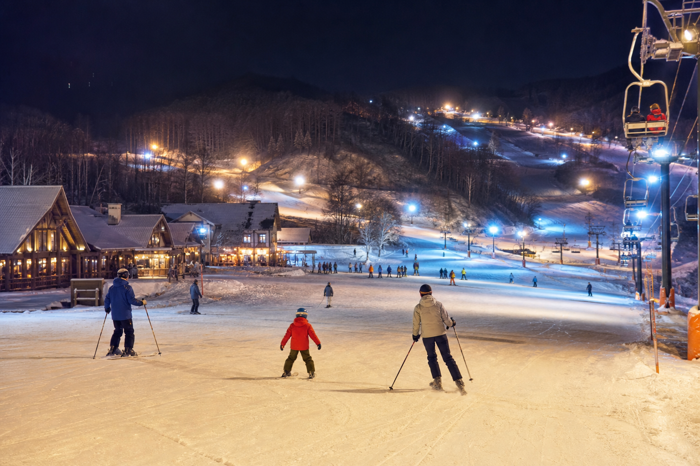
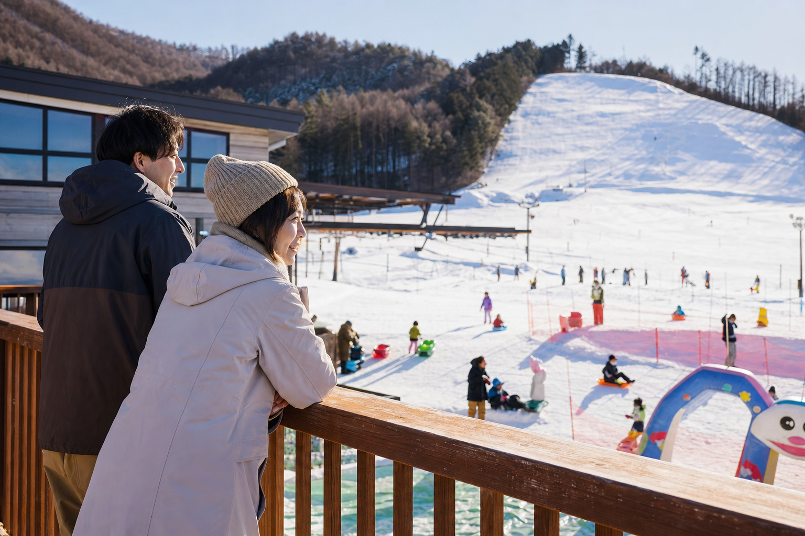

コンパクト × 迷子知らずの安心設計
ベースがカルテットホール一箇所に集約——広大なリゾートで起きがちな「家族とはぐれる」リスクが極めて低い。レストハウスから子どもの滑りを見守りやすく、初心者デビューに最適なコンパクトレイアウトです。
コース・設備を見る長野県朝日村 · 塩尻ICから約20分
はじめての雪遊びからスキーデビューまで、家族の笑顔を約束する安心・安全のプライベートゲレンデ。
ファミリー1日券¥7,500 造雪機22基 塩尻IC約20分更新 1/15 9:00
リフト
2基運行中
第1・第2ペアリフト · 中間降り場あり
コース
2本オープン
ファミリー490m · スペシャル450m
ナイター
営業予定
夜間照明設備あり
ビュー
浅間山麓
標高900〜1,100m · 松本平の眺望
Family Pass
大人1日券4,600円、小人（3歳以上小学生以下）3,100円。大人1名と小人1名の「ファミリー1日券」は7,500円——家族連れのコストパフォーマンスを重視した価格設定です。
Day
大人1日券 ¥4,600
Set
ファミリー1日券 ¥7,500
Hands-free
チケットカウンター・レストラン・ショップが一体のカルテットホールの隣にレンタル棟——ウェア・板・ボードを揃え、DJIアクションカメラのレンタルで滑走記念も。初めての家族がその日のうちにデビューできる体制です。
からまつログコテージではペット同伴宿泊も可能——冬以外のグリーンシーズン回遊と相性の良い滞在型資産。
レンタル案内Night Ski
ナイター設備を備えたコンパクトゲレンデ——松本・塩尻市街から近い立地を活かし、日帰りとナイターを組み合わせた「はじめてづくしの信州半日プラン」を訴求（レポート提言）。
照明下の緩斜面は初心者の夜間デビューにも向く——混雑が少ないローカルゲレンデならではの安心感。
ナイター案内

Snow Debut
レストハウス目の前のキッズパーク（ソリ専用）、平均斜度8度のファミリーゲレンデ、中間降り場付き第2リフト——口コミで高評価のプライベートレッスンと無料初心者レッスンで、午後には親子で滑れる「デビュー保証」体験を演出。
Soba · Craft · Onsen
村内の「そば処 もえぎ野」でとうじそば、朝日村クラフト体験館でマイ箸づくり——帰路の松本「林檎の湯屋おぶ～」や塩尻「信州健康ランド」で冷えた体を癒す、朝日村・松本エリア回遊モデル。
カフェ シュトラッセの自家焙煎コーヒーや村内飲食と組み合わせたマイクロツーリズム・パス構想（レポート第7章）。
グルメ・温泉ルートDay Trip
あさひプライムでスキーデビュー → もえぎ野でとうじそば → クラフト体験館でマイ箸 → 帰路に林檎の湯屋おぶ～。スキー場単体の滞在をエリア全体の消費に転換する公式モデルコース（レポート第5章）。
SKI · SOBA · CRAFT · ONSEN01
あさひプライムでデビュー
9:00からの無料レッスンまたはプライベート指導
02
もえぎ野でとうじそば
石挽き手打ちそばで昼食・体を温める
03
クラフト体験館
家族でお揃いのマイ箸・スプーン作り
04
林檎の湯屋おぶ～
松本市の炭酸泉・サウナでリカバリー
05
塩尻ICへ帰路
雪道が少ないルートで安全に帰宅
Access
長野自動車道・塩尻ICから約15〜18km（車で約20〜28分）· 松本空港から車で約19分
TEL 0263-99-3700 · 営業・料金は公式サイト参照